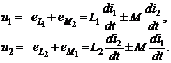
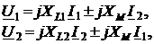

и ЭДС взаимоиндукции
Запишем уравнения электрического равновесия в k-м и n-м контурах схемы замещения цепи с идеальными индуктивно связанными катушками (активные сопротивления катушек Rk = 0), в которых в соответствии с законом электромагнитной
индукции наводятся ЭДС самоиндукции eLk = Lkdik / dt и ЭДС взаимоиндукции eMk = Мkndin / dt.
Для схемы рис. 2.51б уравнения электрического равновесия имеют вид:
 (2.91)
Запишем выражения (2.91) в комплексной форме:
 (2.92)
где jXL1 = jωL1, jX2 = jωL2 − индуктивные сопротивления катушек; ZM = jXM = jωM − сопротивление взаимной индукции катушек.
Доказано, что запас магнитной энергии в поле двух индуктивно связанных катушек
(2.93)
(знак "плюс" в (2.93) соответствует согласному включению катушек, а знак "минус" − встречному).